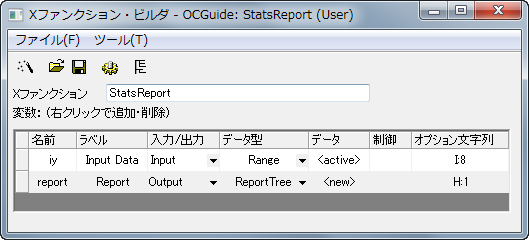

#include <ReportTree.h> // ReportTableクラスに必要
DataRange drInput; drInput.Create(trGetN.iy.strVal); // 入力が無効な場合、エラーメッセージを表示する // 場所はダイアログの下部 // OKボタンは無効 if ( !drInput.IsValid() || drInput.GetNumRanges() < 1 ) { strErrMsg = "Please select valid data for input"; bOKEnable = false; }
DataRange drInput; drInput.Create(trGetN.iy.strVal); // 入力が無効な場合、エラーメッセージを印字 // Xファンクションの実行をとめる if ( !drInput.IsValid() || drInput.GetNumRanges() < 1 ) { out_str("Invalid Input Data"); nRet = XFEVT_ABORT; }
static bool _check_input(const Range& iy) { int nRanges; if ( !iy.IsValid() ) return false; nRanges = iy.GetNumData(DRR_COLUMN_INDEX | DRR_NO_FACTORS); if ( nRanges <= 0 ) return false; return true; }
// ID はどの値でも良いが、固有である必要がある
#define TABLE_ID_BEGIN 0x1000
#define ROW_ID_BEGIN 0x0001
if ( !_check_input(iy) ) { // 入力が無効な場合、 // エラーメッセージが表示され // Xファンクションの実行は中止される XF_THROW("Invalid input data"); return; } // 統計サマリーを表示する表を作成する ReportTable rt = report.CreateTable("Summary",_L("Summary"), TABLE_ID_BEGIN); // レポート表の列ヘッダ const vector<string> vsColLabels = { "N", "Number of Missing", "Mean", "SD", "SEM", "Sum", "Variance" }; int nRowID = ROW_ID_BEGIN; int nRanges = iy.GetNumData(DRR_COLUMN_INDEX | DRR_NO_FACTORS); for ( int nRange = 0; nRange < nRanges; nRange++ ) { // サブレンジを取得 - 1列 DataRange drOne; iy.GetSubRange(drOne, DRR_COLUMN_INDEX | DRR_NO_FACTORS, nRange); // [Book1]Sheet1!Aのような範囲文字列を取得 string strDataLabel; drOne.GetRangeString(strDataLabel); vector vInput; drOne.GetData(&vInput, 0); if ( vInput.GetSize() == 0 ) { // 列が空の場合警告メッセージを印字し、 // 次の列に行く warning_msg_box( strDataLabel + ", empty column found.", false, 'W'); continue; } int N, Missing; double dMean, dSum, dVariance, dSD, dSE; int nRet = ocmath_basic_summary_stats(vInput.GetSize(), vInput, &N, &dMean, &dSD, &dSE, &dVariance, &dSum, NULL, NULL, NULL, NULL, NULL, NULL, &Missing); if ( STATS_NO_ERROR != nRet ) { // statistics関数が失敗したら // 警告メッセージを表示 warning_msg_box( strDataLabel + ", statistics fails.", false, 'W'); continue; } vector vResults(vsColLabels.GetSize()); vResults[0] = N; vResults[1] = Missing; vResults[2] = dMean; vResults[3] = dSD; vResults[4] = dSE; vResults[5] = dSum; vResults[6] = dVariance; //レポート表に新しい行を追加 string strName = "Data" + nRange; rt.AddRow(strName, vResults, strDataLabel, vsColLabels, NULL, nRowID++); }